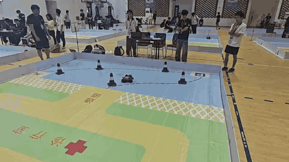
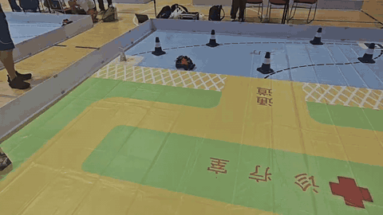
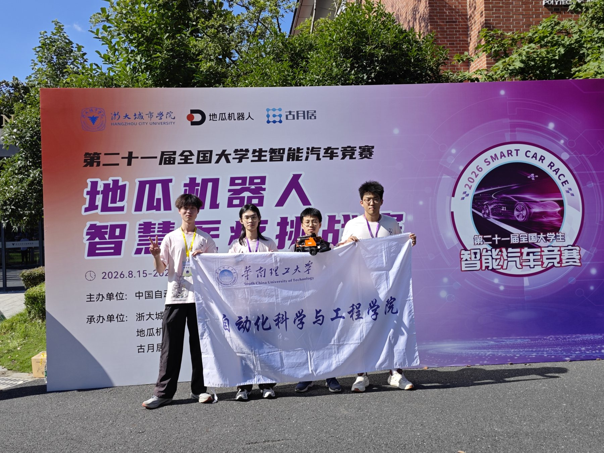

21st National Intelligent Car Competition第二十一届全国大学生智能汽车竞赛
A smarter way through the course.让智能车自主穿越赛道。
For the D-Robotics Smart Healthcare challenge, our team built a ROS 2 vehicle that sees with a camera and LiDAR, predicts where to go next, and turns that decision into motion.
面向地瓜机器人智慧医疗挑战赛，我们搭建了一辆 ROS 2 智能车：用相机与激光雷达感知环境，预测下一步目标点，再将决策转化为底盘运动。

From a task prompt to an autonomous run.从获取任务，到自主完成赛道。
The simulated healthcare course asks the car to reach a task station, read QR and visual cues, follow the assigned corridor, avoid obstacles, and return to the finish. Each step depends on the previous one: perception only matters when it can guide a reliable driving decision.
在模拟医疗场景中，智能车需要抵达任务发布点，读取二维码与图文信息，按照任务要求通过指定通道，避障并返回终点。关键并非单独识别某个目标，而是让感知结果持续支持可靠的行驶决策。
Read the challenge brief查看赛项说明 ↗
One loop, from sensing to steering.从感知到转向，形成完整闭环。
A USB camera and N10 LiDAR feed an image–radar fusion model that predicts a local waypoint. The upper computer converts that target into speed and steering commands; an STM32 drives the Ackermann chassis and returns vehicle state. A mission state machine coordinates navigation and task transitions.
USB 相机与 N10 激光雷达为图像—雷达融合模型提供输入，模型预测局部目标点。上位机据此生成速度和转向指令，由 STM32 驱动 Ackermann 底盘并回传车况；任务状态机负责组织导航和任务切换。

Built together. Tested in competition.团队协作，在赛场检验系统。
This was a team project at the 2026 national competition. The vehicle and its integrated sensing-and-control system earned Second Prize at the National Finals and First Prize in the South China Regional Competition.
这是 2026 年竞赛中的团队项目。参赛车辆及其感知、决策与控制系统获得全国总决赛二等奖、华南赛区区域赛一等奖。
21st National Intelligent Car Competition · D-Robotics Smart Healthcare Challenge第二十一届全国大学生智能汽车竞赛 · 地瓜机器人智慧医疗挑战赛
